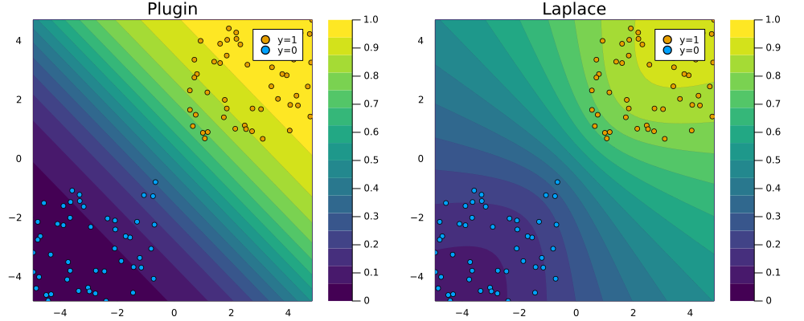
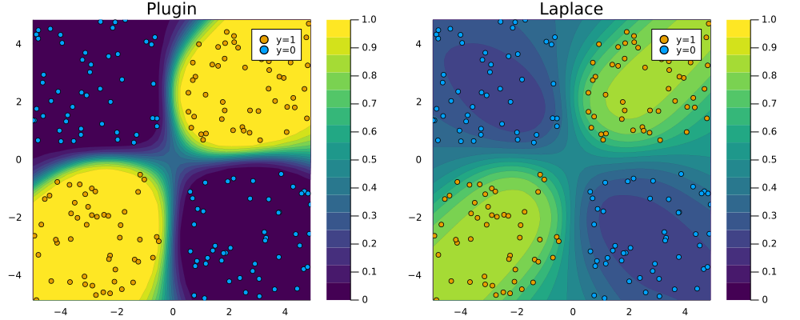
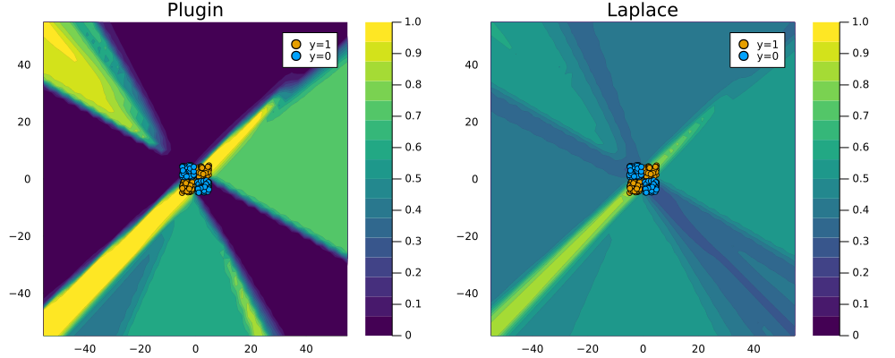

Show the code
# Import libraries.
using Flux, Plots, Random, PlotThemes, Statistics, BayesLaplace
theme(:wong)
# Number of points to generate.
xs, y = toy_data_linear(100)
X = hcat(xs...); # bring into tabular format
data = zip(xs,y);Effortless Bayesian Deep Learning in Julia

Deep learning has dominated AI research in recent years1 - but how much promise does it really hold? That is very much an ongoing and increasingly polarising debate that you can follow live on Twitter. On one side you have optimists like Ilya Sutskever, chief scientist of OpenAI, who believes that large deep neural networks may already be slightly conscious - that’s “may” and “slightly” and only if you just go deep enough? On the other side you have prominent skeptics like Judea Pearl who has long since argued that deep learning still boils down to curve fitting - purely associational and not even remotely intelligent (Pearl and Mackenzie 2018).
Whatever side of this entertaining twitter dispute you find yourself on, the reality is that deep-learning systems have already been deployed at large scale both in academia and industry. More pressing debates therefore revolve around the trustworthiness of these existing systems. How robust are they and in what way exactly do they arrive at decisions that affect each and every one of us? Robustifying deep neural networks generally involves some form of adversarial training, which is costly, can hurt generalization (Raghunathan et al. 2019) and does ultimately not guarantee stability (Bastounis, Hansen, and Vlačić 2021). With respect to interpretability, surrogate explainers like LIME and SHAP are among the most popular tools, but they too have been shown to lack robustness (Slack et al. 2020).
Exactly why are deep neural networks unstable and in-transparent? Let \(\mathcal{D}=\{x,y\}_{n=1}^N\) denote our feature-label pairs and let \(f(x;\theta)=y\) denote some deep neural network specified by its parameters \(\theta\). Then the first thing to note is that the number of free parameters \(\theta\) is typically huge (if you ask Mr Sutskever it really probably cannot be huge enough!). That alone makes it very hard to monitor and interpret the inner workings of deep-learning algorithms. Perhaps more importantly though, the number of parameters relative to the size of \(\mathcal{D}\) is generally huge:
[…] deep neural networks are typically very underspecified by the available data, and […] parameters [therefore] correspond to a diverse variety of compelling explanations for the data. (Wilson 2020)
In other words, training a single deep neural network may (and usually does) lead to one random parameter specification that fits the underlying data very well. But in all likelihood there are many other specifications that also fit the data very well. This is both a strength and vulnerability of deep learning: it is a strength because it typically allows us to find one such “compelling explanation” for the data with ease through stochastic optimization; it is a vulnerability because one has to wonder:
How compelling is an explanation really if it competes with many other equally compelling, but potentially very different explanations?
A scenario like this very much calls for treating predictions from deep learning models probabilistically [Wilson (2020)]23.
Formally, we are interested in estimating the posterior predictive distribution as the following Bayesian model average (BMA):
\[ p(y|x,\mathcal{D}) = \int p(y|x,\theta)p(\theta|\mathcal{D})d\theta \]
The integral implies that we essentially need many predictions from many different specifications of \(\theta\). Unfortunately, this means more work for us or rather our computers. Fortunately though, researchers have proposed many ingenious ways to approximate the equation above in recent years: Gal and Ghahramani (2016) propose using dropout at test time while Lakshminarayanan, Pritzel, and Blundell (2016) show that averaging over an ensemble of just five models seems to do the trick. Still, despite their simplicity and usefulness these approaches involve additional computational costs compared to training just a single network. As we shall see now though, another promising approach has recently entered the limelight: Laplace approximation (LA).
If you have read my previous post on Bayesian Logistic Regression, then the term Laplace should already sound familiar to you. As a matter of fact, we will see that all concepts covered in that previous post can be naturally extended to deep learning. While some of these concepts will be revisited below, I strongly recommend you check out the previous post before reading on here. Without further ado let us now see how LA can be used for truly effortless deep learning.
While LA was first proposed in the 18th century, it has so far not attracted serious attention from the deep learning community largely because it involves a possibly large Hessian computation. Daxberger et al. (2021) are on a mission to change the perception that LA has no use in DL: in their NeurIPS 2021 paper they demonstrate empirically that LA can be used to produce Bayesian model averages that are at least at par with existing approaches in terms of uncertainty quantification and out-of-distribution detection and significantly cheaper to compute. They show that recent advancements in autodifferentation can be leveraged to produce fast and accurate approximations of the Hessian and even provide a fully-fledged Python library that can be used with any pretrained Torch model. For this post, I have built a much less comprehensive, pure-play equivalent of their package in Julia - BayesLaplace.jl can be used with deep learning models built in Flux.jl, which is Julia’s main DL library. As in the previous post on Bayesian logistic regression I will rely on Julia code snippits instead of equations to convey the underlying maths. If you’re curious about the maths, the NeurIPS 2021 paper provides all the detail you need.
Let’s recap: in the case of logistic regression we had a assumed a zero-mean Gaussian prior \(p(\mathbf{w}) \sim \mathcal{N} \left( \mathbf{w} | \mathbf{0}, \sigma_0^2 \mathbf{I} \right)=\mathcal{N} \left( \mathbf{w} | \mathbf{0}, \mathbf{H}_0^{-1} \right)\) for the weights that are used to compute logits \(\mu_n=\mathbf{w}^T\mathbf{x}_n\), which in turn are fed to a sigmoid function to produce probabilities \(p(y_n=1)=\sigma(\mu_n)\). We saw that under this assumption solving the logistic regression problem corresponds to minimizing the following differentiable loss function:
\[ \ell(\mathbf{w})= - \sum_{n}^N [y_n \log \mu_n + (1-y_n)\log (1-\mu_n)] + \\ \frac{1}{2} (\mathbf{w}-\mathbf{w}_0)^T\mathbf{H}_0(\mathbf{w}-\mathbf{w}_0) \]
As our first step towards Bayesian deep learning, we observe the following: the loss function above corresponds to the objective faced by a single-layer artificial neural network with sigmoid activation and weight decay4. In other words, regularized logistic regression is equivalent to a very simple neural network architecture and hence it is not surprising that underlying concepts can in theory be applied in much the same way.
So let’s quickly recap the next core concept: LA relies on the fact that the second-order Taylor expansion of our loss function \(\ell\) evaluated at the maximum a posteriori (MAP) estimate \(\mathbf{\hat{w}}=\arg\max_{\mathbf{w}} p(\mathbf{w}|\mathcal{D})\) amounts to a multi-variate Gaussian distribution. In particular, that Gaussian is centered around the MAP estimate with covariance equal to the inverse Hessian evaluated at the mode \(\hat{\Sigma}=(\mathbf{H}(\mathbf{\hat{w}}))^{-1}\) (Murphy 2022).
That is basically all there is to the story: if we have a good estimate of \(\mathbf{H}(\mathbf{\hat{w}})\) we have an analytical expression for an (approximate) posterior over parameters. So let’s go ahead and start by run Bayesian Logistic regression using Flux.jl. We begin by loading some required packages including BayesLaplace.jl. It ships with a helper function toy_data_linear that creates a toy data set composed of linearly separable samples evenly balanced across the two classes.
# Import libraries.
using Flux, Plots, Random, PlotThemes, Statistics, BayesLaplace
theme(:wong)
# Number of points to generate.
xs, y = toy_data_linear(100)
X = hcat(xs...); # bring into tabular format
data = zip(xs,y);Then we proceed to prepare the single-layer neural network with weight decay. The term \(\lambda\) determines the strength of the \(\ell2\) penalty: we regularize parameters \(\theta\) more heavily for higher values. Equivalently, we can say that from the Bayesian perspective it governs the strength of the prior \(p(\theta) \sim \mathcal{N} \left( \theta | \mathbf{0}, \sigma_0^2 \mathbf{I} \right)= \mathcal{N} \left( \mathbf{w} | \mathbf{0}, \lambda_0^{-2} \mathbf{I} \right)\): a higher value of \(\lambda\) indicates a higher conviction about our prior belief that \(\theta=\mathbf{0}\), which is of course equivalent to regularizing more heavily. The exact choice of \(\lambda=0.5\) for this toy example is somewhat arbitrary (it made for good visualizations below). Note that I have used \(\theta\) to denote our neural parameters to distinguish the case from Bayesian logistic regression, but we are in fact still solving the same problem.
nn = Chain(Dense(2,1))
λ = 0.5
sqnorm(x) = sum(abs2, x)
weight_regularization(λ=λ) = 1/2 * λ^2 * sum(sqnorm, Flux.params(nn))
loss(x, y) = Flux.Losses.logitbinarycrossentropy(nn(x), y) + weight_regularization();Before we apply Laplace approximation we train our model:
using Flux.Optimise: update!, ADAM
opt = ADAM()
epochs = 50
for epoch = 1:epochs
for d in data
gs = gradient(params(nn)) do
l = loss(d...)
end
update!(opt, params(nn), gs)
end
endUp until this point we have just followed the standard recipe for training a regularized artificial neural network in Flux.jl for a simple binary classification task. To compute the Laplace approximation using BayesLaplace.jl we need just two more lines of code:
la = laplace(nn, λ=λ)
fit!(la, data);Under the hood the Hessian is approximated through the empirical Fisher, which can be computed using only the gradients of our loss function \(\nabla_{\theta}\ell(f(\mathbf{x}_n;\theta,y_n))\) where \(\{\mathbf{x}_n,y_n\}\) are training data (see NeurIPS 2021 paper for details). Finally, BayesLaplace.jl ships with a function predict(𝑳::LaplaceRedux, X::AbstractArray; link_approx=:probit) that computes the posterior predictive using a probit approximation, much like we saw in the previous post. That function is used under the hood of the plot_contour function below to create the right panel of Figure 1. It visualizes the posterior predictive distribution in the 2D feature space. For comparison I have added the corresponding plugin estimate as well. Note how for the Laplace approximation the predicted probabilities fan out indicating that confidence decreases in regions scarce of data.
p_plugin = plot_contour(X',y,la;title="Plugin",type=:plugin);
p_laplace = plot_contour(X',y,la;title="Laplace")
# Plot the posterior distribution with a contour plot.
plt = plot(p_plugin, p_laplace, layout=(1,2), size=(1000,400))
savefig(plt, "www/posterior_predictive_logit.png");
Now let’s step it up a notch: we will repeat the exercise from above, but this time for data that is not linearly separable using a simple MLP instead of the single-layer neural network we used above. The code below is almost the same as above, so I will not go through the various steps again.
# Number of points to generate:
xs, y = toy_data_non_linear(200)
X = hcat(xs...); # bring into tabular format
data = zip(xs,y)
# Build MLP:
n_hidden = 32
D = size(X)[1]
nn = Chain(
Dense(D, n_hidden, σ),
Dense(n_hidden, 1)
)
λ = 0.01
sqnorm(x) = sum(abs2, x)
weight_regularization(λ=λ) = 1/2 * λ^2 * sum(sqnorm, Flux.params(nn))
loss(x, y) = Flux.Losses.logitbinarycrossentropy(nn(x), y) + weight_regularization()
# Training:
epochs = 200
for epoch = 1:epochs
for d in data
gs = gradient(params(nn)) do
l = loss(d...)
end
update!(opt, params(nn), gs)
end
endFitting the Laplace approximation is also analogous, but note that this we have added an argument: subset_of_weights=:last_layer. This specifies that we only want to use the parameters of the last layer of our MLP. While we could have used all of them (subset_of_weights=:all), Daxberger et al. (2021) find that the last-layer Laplace approximation produces satisfying results, while be computationally cheaper. Figure 2 demonstrates that once again the Laplace approximation yields a posterior predictive distribution that is more conservative than the over-confident plugin estimate.
la = laplace(nn, λ=λ, subset_of_weights=:last_layer)
fit!(la, data);
p_plugin = plot_contour(X',y,la;title="Plugin",type=:plugin)
p_laplace = plot_contour(X',y,la;title="Laplace")
# Plot the posterior distribution with a contour plot.
plt = plot(p_plugin, p_laplace, layout=(1,2), size=(1000,400))
savefig(plt, "www/posterior_predictive_mlp.png");
To see why this is a desirable outcome consider the zoomed out version of Figure 2 below: the plugin estimator classifies with full confidence in regions completely scarce of any data. Arguably Laplace approximation produces a much more reasonable picture, even though it too could likely be improved by fine-tuning our choice of \(\lambda\) and the neural network architecture.
zoom=-50
p_plugin = plot_contour(X',y,la;title="Plugin",type=:plugin,zoom=zoom);
p_laplace = plot_contour(X',y,la;title="Laplace",zoom=zoom);
# Plot the posterior distribution with a contour plot.
plt = plot(p_plugin, p_laplace, layout=(1,2), size=(1000,400));
savefig(plt, "www/posterior_predictive_mlp_zoom.png");
Recent state-of-the-art research on neural information processing suggests that Bayesian deep learning can be effortless: Laplace approximation for deep neural networks appears to work very well and it does so at minimal computational cost (Daxberger et al. 2021). This is great news, because the case for turning Bayesian is strong: society increasingly relies on complex automated decision-making systems that need to be trustworthy. More and more of these systems involve deep learning which in and of itself is not trustworthy. We have seen that typically there exist various viable parameterizations of deep neural networks each with their own distinct and compelling explanation for the data at hand. When faced with many viable options, don’t put all of your eggs in one basket. In other words, go Bayesian!
To get started with Bayesian deep learning I have found many useful and free resources online, some of which are listed below:
Turing.jl tutorial on Bayesian deep learning in Julia.See for example this article in the MIT Technology Review↩︎
In fact, not treating probabilistic deep learning models as such is sheer madness because remember that the underlying parameters \(\theta\) are random variables. Frequentists and Bayesians alike will tell you that relying on a single point estimate of random variables is just nuts!↩︎
Proponents of Causal AI like Judea Pearl would argue that the Bayesian treatment still does not go far enough: in their view model explanations can only be truly compelling if they are causally found.↩︎
See this answer on Stack Exchange for a detailed discussion.↩︎
@online{altmeyer2022,
author = {Patrick Altmeyer},
title = {Go Deep, but Also ... Go {Bayesian!}},
date = {2022-02-18},
langid = {en}
}